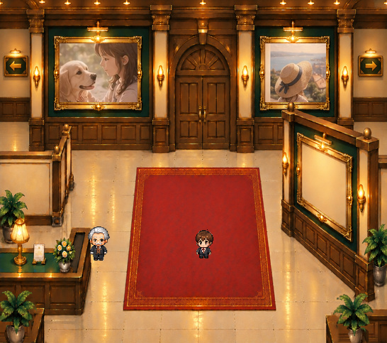
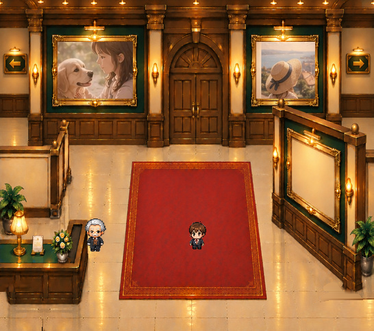

台座と植物を組み合わせて確認
写真と正式キャラクターは既存素材を使用しています。左右の台座の大きさ・表示・位置を変えられます。
完成候補と床面下地




台座が隠していた床の部分は、原本の石床から補完しています。台座の前面に隠れた木目は、元の館内の腰壁木材から補いました。標準状態も原本と完全な画素一致ではなく、美術監修が必要です。
サイズ可変の比較（実合成）


鉢と台座は元画像で画面下端が切れているため、下端を固定した90〜110%の範囲のみ検証しています。上下移動・画面外の形状は未保証です。